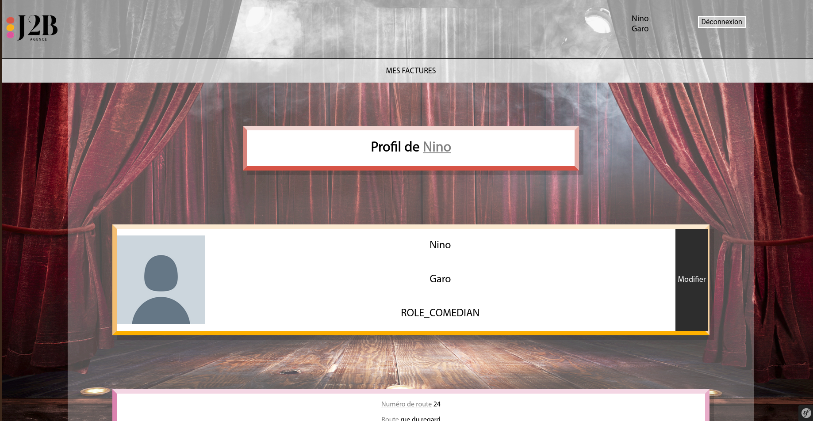
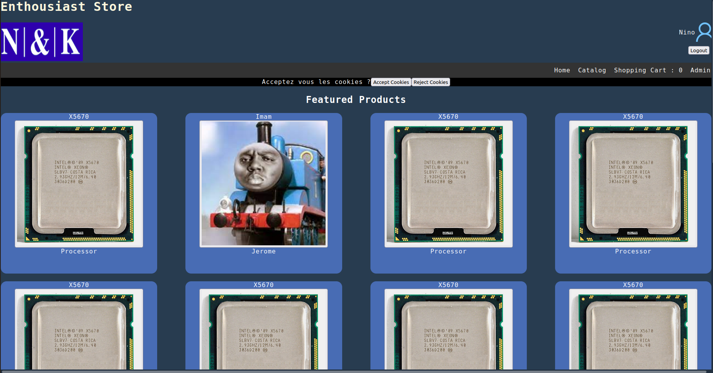
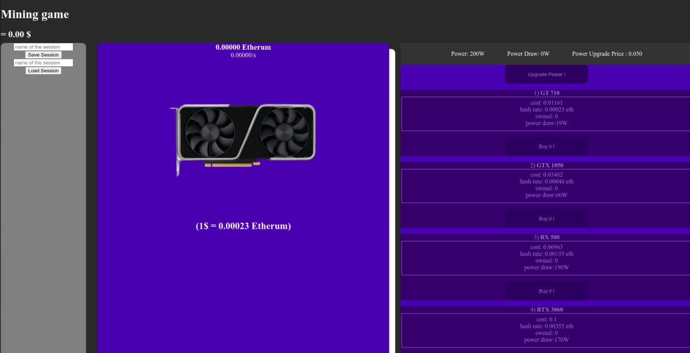

Suite à une spécialisation en informatique avec mes différents choix durant les dernières années,
mon attrait pour le numérique s'est confirmé. Cet attrait me permet de réaliser de beaux projets qui
répondent
aux besoins des clients professionels et nourissent mon envie d'apprendre.
Actuellement en formation d'integrateur développeur web, mes compétences s'améliorent au fil du temps grâce
à un travail rigoureux et régulier.
Passionné et enthousiaste, je m'adapte à toutes les situations tout en partageant mon expérience
aux plus débutants
Outil de génération de factures

Site web sous Symfony créé
pour l'Agence J2B afin de simplifier
le travail des admins
Site e-commerce

Projet Laravel créé dans l'optique
de découvrir ce framework
Clicker Game

Clicker Game créé en Javascript dans l'univers
des cryptomonnaies
Jeu Zelda

Jeu Zelda tour par tour en Bash dans le cadre d'un apprentissage
de l'environnement Linux
Bot Discord

Outil de divertissement sur la plateforme Discord programmé en Python sous la libraire
discord.py